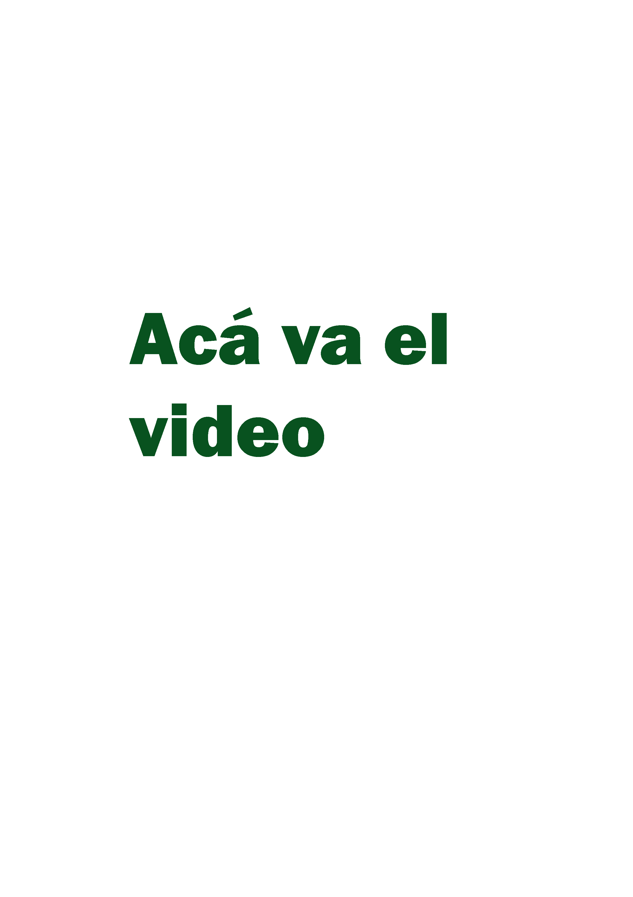

LA OPINIÓN DE DOCENTES SOBRE IA
Los docentes no son meros transmisores de contenido, sino actores fundamentales en el proceso educativo. Tienen un conocimiento profundo del contexto del aula, de las necesidades específicas de sus estudiantes, y de las dinámicas de aprendizaje. Por lo tanto, cualquier transformación significativa del sistema educativo, como la incorporación de herramientas de inteligencia artificial, debe considerar su perspectiva para que dicha transformación sea efectiva, relevante y sostenible.
La incorporación de IA modifica el rol tradicional del profesor. Muchas tareas, como la corrección de exámenes, la evaluación de progreso o la personalización de contenidos, pueden ser parcialmente automatizadas. Esto no significa que el profesor se vuelva obsoleto, sino que su papel cambia y necesita reorientarse hacia otras funciones más humanas: guía pedagógica, acompañamiento emocional, pensamiento crítico, etc. Conocer cómo los profesores perciben estos cambios es esencial para diseñar programas de formación continua que respondan a sus necesidades reales. Esto evita que se sientan desplazados, poco valorados o insuficientemente preparados para afrontar los nuevos desafíos.
La Inteligencia Artificial en el aula ya es moneda corriente. ¿Limita a la razón? ¿La expande? Esto es lo que piensan los docentes de la ciudad de Río Cuarto, Córdoba
PROFESIONALES ENREVSTADOS
La implementación de la IA no ocurre en un vacío: cada escuela, región o país tiene condiciones diferentes en cuanto a infraestructura, formación tecnológica, cultura educativa, y nivel socioeconómico. Los profesores pueden aportar una mirada situada sobre cómo estas tecnologías se adaptan (o no) a sus contextos específicos. Es por eso que recurrimos a las opiniones y experiencias de profesionales, maestros, educadores que tienen mucho para decir sobre la Inteligencia Artificial.
Juan Cruz Vidart
Profesor de Ciencias Políticas, Jurídicas y Sociales
Aldana D'Andrea
Profesora de Filosofía de la Técnica
Camila Lanfranco
Licenciada en Filosofía
Luciano Nicola Dapelo
Profesor de Historia
.png)